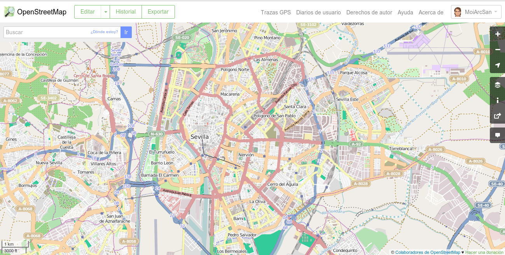
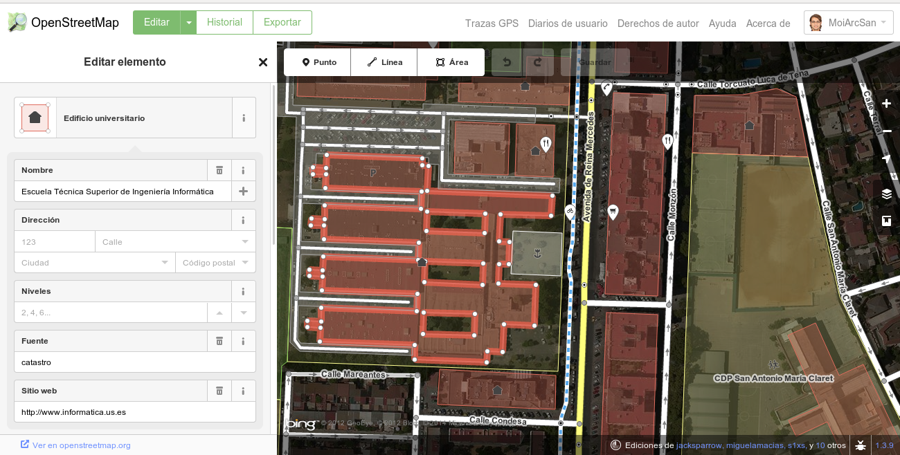
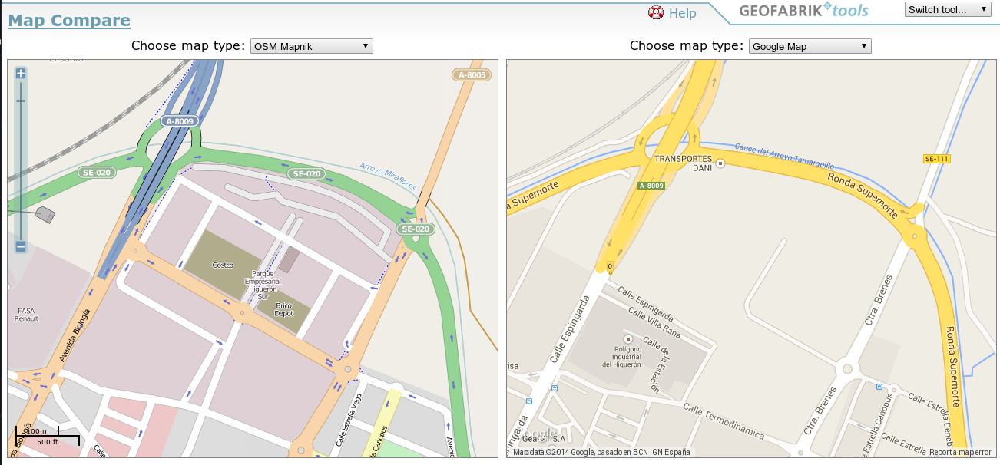
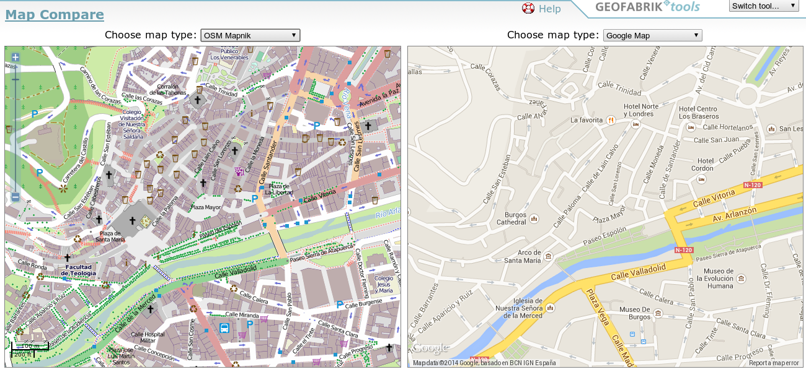
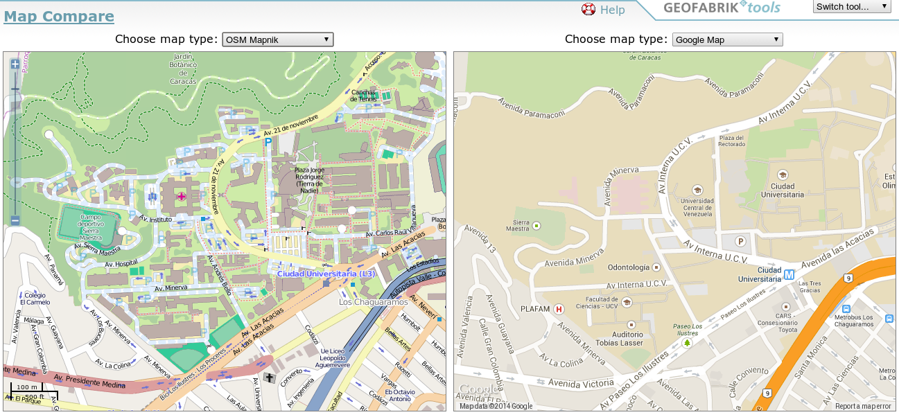
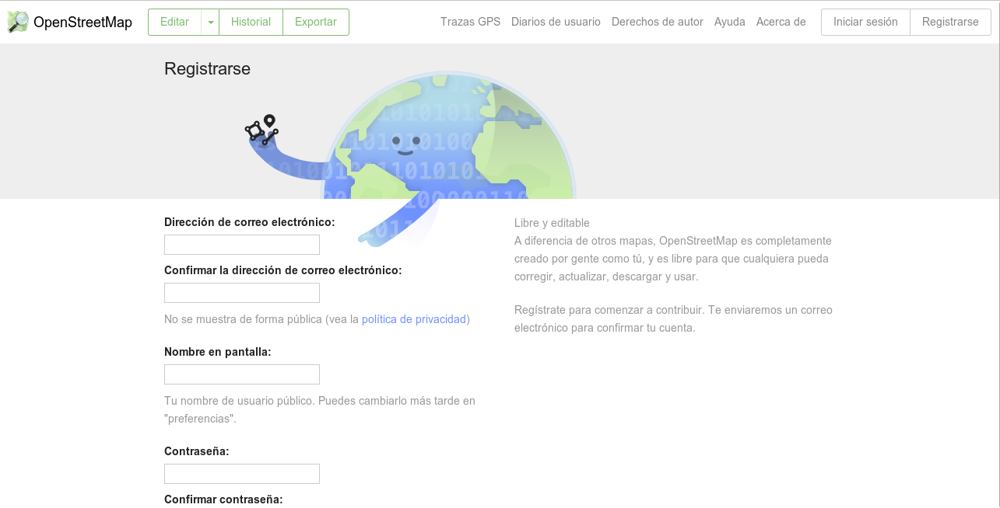
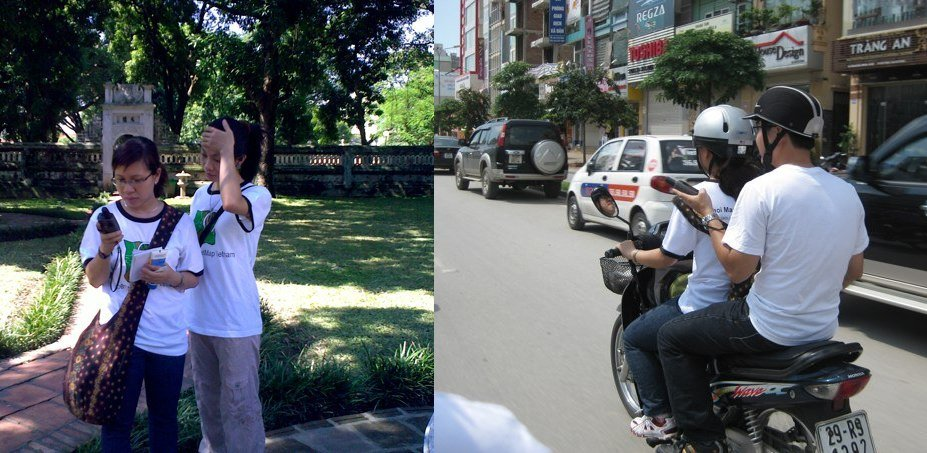
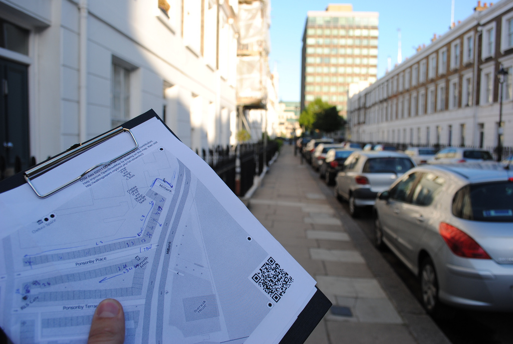

OpenStreetMap
Tu calle es la de todos
Geoinquietos Sevilla
Jueves, 15 de mayo de 2014
Quién soy yo
- Desarrollador GIS
- Miembro de
Moisés Arcos - @moiarcsan
Introducción
Información es poder
Mayor calidad --> Mejor toma de decisiones
Mapa = información visual
Mapa ayuda a tomar decisiones
Introducción
Vamos a dibujar
Papel y boli
Piensa en tu pueblo
¿Qué dibujarias?
Introducción
Tu mapa está limitado
- Sólo tiene sentido para tí
- Complicado llevar a otras personas
- Formato papel
Se queda en un trozo de papel
Introducción
OpenStreetMap
- Crear + Compartir información
- Cualquiera puede contribuir
- Formato digital --> en la nube
- Información
- Accesible por todo el mundo
- Totalmente gratis
- De uso libre
Motivación
Objetivo + Razón
- Información pública --> ¿Uso libre?
- Licencias de datos
- Propiedad de la inforamción
Motivación
Información pública
Se paga dos veces
- Por generarla --> Impuestos
- Por obtenerla --> Precio
Motivación
Licencia de datos
Muy limitadoras
- Corregir errores --> NO
- Añadir nuevos datos --> NO
- Uso de los datos --> limitados
Motivación
Propiedad de la información
OSM vs MapMarker vs MapShare
- OSM --> Propiedad libre
- MapMarker --> Propiedad Google
- MapShare --> Propiedad Tomtom
Qué es OSM
Wikipedia de los mapas
Proyecto para crear un mapa colaborativo mundial
- OpenData
- Información geográfica
- Ecosistema de productos y servicios
Qué es OSM
Ver
Qué es OSM

Consultar
Qué es OSM
Editar
Qué es OSM
Si ya tenemos Google Maps
2 motivos principales
- API restrictiva + publicidad
- Información propiedad de Google
Qué es OSM
Licencia
ODBL
- Uso libre --> Atribución
- Respetar licencia abierta
Comparemos
Sevilla
Comparemos
Burgos
Comparemos
Venezuela
Comparemos

Guadalcanal
Colaborar
Registrarse
Colaborar
Flujo de trabajo
- Recolectar
- Editar
- Renderizar
Colaborar
Recolectar
- Tomando datos in situ
- GPS + libreta/cámara/grabadora
- Walking Papers
- Mapping Parties
- Tomando datos a distancia
- Imágenes satelitales
- Data sources: kml, shape ...
- ...
Colaborar
Tomando datos con GPS
Colaborar
Walking paper
Colaborar

Mapping Parties
Colaborar
Editar
- iD Editor
- Versión web
- Fácil para iniciarse
- No admite plugins
- Funcionalidad limitada
- JOSM
- Versión de escritorio (Java)
- Hay que tener conocimientos
- Admite plugins
- Mucha funcionalidad
- Hay más ...
Colaborar
iD Editor
Colaborar